1. Critères généraux
Description
Affinity est un logiciel de conception graphique propriétaire qui a été conçu en C++ et Objective-C [1][2]. Il réunit trois studios qui étaient auparavant des logiciels distincts :
- Vecteur pour les images vectorielles (redimensionnables sans perte de qualité),
- Pixel pour la retouche d’images et de photos et
- Mise en page pour l’insertion d’images et l’édition de texte avec des outils typographiques de pointe.
Le studio Mise en page, grâce aux options d’exportation en PDF et EPUB, rend le logiciel pertinent pour l’édition numérique.
Modèle de licence (freemium)
Toutes les fonctions, sauf celles qui utilisent l’IA, sont offertes avec un compte Canva gratuit.
| Licence | Prix | Contenu |
|---|---|---|
| Gratuite (individuelle) | 0 $ | Fonctions de base, liée à un compte |
| Éducation | 0 $ | Gratuit pour le personnel et les élèves des écoles primaires et secondaires [3] |
| Pro (individuelle ou équipes) | 18 $/mois ou 142 $/an | Outils d’IA, 5 identités visuelles |
| Organismes sans but lucratif | 0 $ | Fonctionnalités Canva Pro, jusqu’à 50 membres |
| Pro+ (équipes ou particuliers) | 26 $/mois ou 260 $/an | Administration d’équipe, plus de jetons d’IA |
| Entreprise | Sur devis | Authentification unique (SSO), assistance prioritaire [4] |
| Canva Campus (postsecondaire) | Sur devis | Fonctionnalités Entreprise et accès « premium » pour les étudiants [5] |
Maturité du logiciel (ligne de temps)
Fondation de la société Serif au Royaume-Uni [6].
Publication de PagePlus, logiciel de mise en pages de Serif qui précède Affinity Publisher [7].
Publication d’Affinity Designer V1 [8].
Publication d’Affinity Photo V1 [9].
Affinity Publisher V1 est publié [10].
Lancement de la V2 de la suite Affinity [10].
Acquisition par Canva (société australienne) de Serif [11].
Lancement de la version unifiée d’Affinity, qui fusionne les trois logiciels [12].
Mise à jour pénultième.
Mise à jour la plus récente [13]. Le rythme de 1 à 2 mois montre que le logiciel est toujours entretenu.
Lancement prévu de la version iPad.
Interopérabilité
Systèmes compatibles
Le logiciel n’est pas disponible sur Linux [16], mais des initiatives communautaires utilisent WINE pour en permettre l’installation [17] [18].
Intégration web
On peut utiliser le logiciel hors ligne, mais cela exige une connexion au compte Canva tous les 30 jours [19]. Les fonctions d’IA [20] et l’intégration des identités visuelles (kits de marque) sur Canva [21] demandent elles aussi une connexion.
Intégration à d’autres applications
- Réutilisation des identités visuelles de Canva (kits de marque) [21].
- L’exportation des projets complets est possible vers le stockage infonuagique de Canva, mais l’importation depuis cet espace ne l’est pas, lui [22].
- Intégrations avec Capture One [23] et DaVinci Resolve [24].
- L’importation de fichiers InDesign (IDML, INDD) et Publisher (PUB), ainsi que d’autres types de fichiers propriétaires [25], est prise en charge, mais l’exportation vers ces formats n’est pas possible [26].
Dépendances
Un compte Canva est requis pour utiliser le logiciel, même pour la version gratuite.
Soutien technique
Seuls les comptes avec un abonnement Entreprise bénéficient d’une assistance technique de l’équipe Canva.
- Documentation : https://www.affinity.studio/fr_fr/help/
- Tutoriels officiels : https://www.youtube.com/AffinitySuite et https://www.affinity.studio/fr_fr/resources
- Blogue de formation : https://www.affinity.studio/fr_fr/blog
- Aide intégrée : modules d’apprentissage interactifs téléchargeables dans le logiciel (Figure 1)
Communauté
- Discord : https://discord.com/invite/officialaffinity
- Reddit : https://www.reddit.com/r/Affinity/
- Réseaux sociaux officiels : Facebook, Instagram, Threads, TikTok, X (Twitter), YouTube
- Forum officiel d’Affinity désactivé depuis l’acquisition par Canva : https://forum.affinity.serif.com/
- Il existe plusieurs tutoriels et guides non officiels, par exemple https://mikeloader.ca/2025/12/21/expert-guide-to-affinity-by-canva-3-0/
2. Critères techniques
Fonctionnalités
Affinity réunit trois logiciels de la suite Affinity 2,0 (qui traitaient la retouche des photos, le dessin vectoriel et la mise en pages) dans un seul logiciel. Ces trois fonctions correspondent aux Studios affichés par défaut sous la barre de menu qui sont des configurations d’outils dans la barre à gauche. L’utilisateur peut « customiser » les Studios et créer les siens (Figure 2). Ce rapport traite des fonctionnalités du Studio Mise en page, car c’est le plus pertinent pour l’édition numérique.
Document
À la création d’un document, on établit les dimensions de la page, l’orientation, les unités, le format de la couleur (ex. RVB ou CMJN), et les marges (Figure 3).
Le travail s’organise autour de la page et de la planche, qui représente deux pages en vis-à-vis pour un livre ou qui en représente plusieurs s’il s’agit d’un dépliant [27]. Le panneau « Pages » permet d’ajouter, de déplacer, de copier et de supprimer les pages ainsi que de configurer les planches (Figure 4).
Interface
L’interface comprend une barre supérieure qui change de contrôles selon l’outil actif, et une barre contextuelle inférieure qui affiche une courte directive d’utilisation (Figure 5). Des panneaux que l’on peut ancrer et configurer encadrent l’espace de travail, où chaque document s’ouvre dans un onglet. À droite, on trouve deux sélecteurs de couleur et les réglages des traits (bordures) (Figure 6). Le panneau « Calques » liste les objets du document et permet de changer leur ordre d’empilement, de les grouper, de les masquer et de les verrouiller (Figure 7). D’autres panneaux servent à transformer les dimensions et l’axe de rotation des objets, à naviguer (zoom) et à consulter l’historique des changements (Figure 8). Le studio offre aussi des règles, des grilles et l’aimantation pour positionner les objets, ainsi qu’un mode d’aperçu avant publication.
Les raccourcis clavier sont modifiables, et il est possible d’écrire les Scripts en JavaScript [28] afin d’automatiser les tâches répétitives. Si le logiciel se plante, il peut rétablir les documents non enregistrés.
Les maquettes (pages types) permettent de réutiliser des objets sur plusieurs pages, comme des en-têtes, des pieds de page (Figure 9), des cadres de texte ou des images. Si l’on modifie la maquette, toutes les pages qui l’utilisent se modifient elles aussi. Un document peut comporter plusieurs maquettes. Les champs, comme le numéro de page ou le nom de section, permettent d’insérer une variable qui se met à jour sur chaque page. On peut aussi diviser le document en sections, chacune ayant sa propre numérotation.
Texte
Le texte se place dans des zones de texte, des formes, des tracés ou en texte artistique. On peut relier les zones pour que le texte s’écoule de l’une à l’autre. Un habillage permet de contourner des images ou d’autres objets dans la page (Figure 10). Affinity distingue trois types de style de texte : Paragraphe, Caractère et Groupe. Ces styles peuvent s’appuyer sur d’autres et ainsi y hériter de ses attributs.
La mise en forme des paragraphes inclut l’interlignage, l’espacement entre paragraphes, les retraits, les tabulations et les listes à plusieurs niveaux. Le logiciel permet aussi des effets typographiques décoratifs pour les mots initiaux, les lettrines (les lettres initiales d’un paragraphe) [29] ainsi que les bordures et le remplissage en arrière-plan [30]. Il permet également d’appliquer un alignement visuel [31] et des césures (c’est-à-dire les coupures des mots à la fin de la ligne par l’insertion d’un trait d’union) [32], qui corrigent l’apparence des bords du texte (Figure 11).
Pour ce qui est du caractère (ou mots, lignes et phrases à l’intérieur d’un paragraphe), Affinity permet d’y ajouter les indices et les exposants, d’en ajuster l’interlettrage et le crénage (ce qu’on définit par l’espacement entre les caractères) [33], et d’y installer et d’y appliquer des polices variables (qui offrent des combinaisons d’épaisseurs et de largeurs différentes) [34] (Figure 12).
Le logiciel comporte encore bien d’autres outils d’édition, comme l’affichage des marques de texte, la recherche et le remplacement, les statistiques de document (le nombre de mots, de caractères, de lignes ou de paragraphes) [35] et offre également l’option d’ajouter des dictionnaires orthographiques et de césure de LibreOffice [36].
Structure et navigation
Le logiciel peut générer une table des matières à partir des styles appliqués aux titres du document (Figure 13). Ses entrées peuvent devenir des signets PDF. Il est également possible de construire un index hiérarchique, en ajoutant des marques d’index dans le document et en les reliant à un des termes.
Affinity permet d’insérer des liens hypertextes qui renvoient vers une adresse web (Figure 14), une page, une section ou un élément précis du document. On définit ces derniers par des ancres, qui marquent un emplacement nommé et qui peuvent devenir des signets à l’export en PDF ou en EPUB. De façon semblable, les références croisées renvoient à une ancre, à un paragraphe ou à une marque d’index. Leur texte peut inclure des champs pour rester à jour même si l’emplacement de la cible change, et elles peuvent générer un hyperlien. Le logiciel propose trois types de notes : de bas de page, en marge et de fin (regroupées à la fin d’une section ou d’un document) [37].
Importation de contenu
Le gestionnaire de ressources importe du texte aux formats TXT, RTF et DOCX [38], de même que des images (Figure 15). Les images peuvent aussi provenir d’une URL ou d’une recherche dans les photothèques en ligne Pexels et Pixabay. L’utilisateur choisit d’intégrer ou de lier les fichiers. Intégré, le fichier rend le document autonome. Lié, il reste à l’extérieur et le document se met à jour s’il change [39]. Les cadres d’image les recadrent et les positionnent sans modifier le fichier source. Le studio permet aussi de créer des tableaux ou de les importer depuis Microsoft Excel ou LibreOffice Calc, d’en trier les données et d’y enregistrer des formats personnalisés sous forme de modèles.
Exportation
Le panneau « Livre » permet d’assembler plusieurs documents Affinity (AF) en chapitres ou en pages isolées (Figure 16). Il est possible de synchroniser les styles de texte et les maquettes de l’ensemble du projet pour obtenir une présentation cohérente.
Le Contrôle en amont vérifie qu’un document s’exportera comme prévu. Il liste chaque problème et propose parfois un bouton « Corriger ». Il couvre notamment les polices ou les caractères manquants, les images de faible résolution ou celles dont les liens sont rompus, le texte en débordement, les couleurs RVB ou CMJ inattendues, les références, les tables ou les index périmés, etc. [40]. L’utilisateur peut ajouter ses propres commentaires de contrôle sur des objets (par exemple, pour vérifier les droits sur une image) avant la publication (Figure 17).
Utilisabilité
Installation
L’installation et la configuration sont simples et ne demandent pas beaucoup de temps : on télécharge un .dmg (MacOS) ou un .exe (Windows) [41]. Sous Windows, il est également possible de télécharger le logiciel depuis le Microsoft Store ou d’utiliser Winget [42]. Il faut prévoir 1 à 2,5 Go d’espace sur son disque dur [14].
Utilisation et apprentissage
Les outils d’Affinity suivent les conventions des logiciels Adobe (Photoshop, Illustrator, InDesign) en ce qui concerne la barre d’outils à gauche, les panneaux ancrables à droite et les raccourcis clavier similaires. Un utilisateur familier de ces logiciels peut donc facilement repérer les fonctions sans avoir à tout réapprendre. Les icônes spécifiques à Affinity sont l’exception, mais on peut les découvrir grâce aux infobulles qui fournissent une description précise de chaque outil. Chaque description comprend également un bouton « En savoir plus… » qui entraîne l’ouverture d’une fenêtre affichant la page web de documentation complète de l’outil (Figure 18).
3. Évaluation
Points positifs
- Solution complète et gratuite pour la mise en pages et l’édition numérique
- Lit les fichiers propriétaires Adobe ; l’interface et les raccourcis sont similaires
- Facile et agréable à utiliser, même pour les non-initiés
Points négatifs
- Malgré l’engagement de Canva à créer des logiciels accessibles [43], les PDF exportés d’Affinity ne sont pas conformes aux normes attendues par la communauté. Les balises pour les lecteurs d’écran ne traitent que les en-têtes, les paragraphes et le texte alternatif, mais pas pour les tableaux ni les listes. De plus, il est nécessaire d’effectuer des modifications importantes après l’exportation afin de regrouper les paragraphes exportés en lignes distinctes [44].
- La traduction de la version française de l’interface comporte des erreurs (Figure 19).
- Il n’y a aucune version Linux ni Android.
Autres remarques
Le stockage infonuagique inclus avec un compte Canva ne convient pas aux fichiers AF d’Affinity. Cet espace ne sert qu’à la conservation des créations finies et converties pour l’écosystème web de Canva.
De plus, Affinity n’offre pas la coédition en temps réel (contrairement à Canva). Cela veut dire que les flux de travail en équipe doivent passer par un serveur où un individu emprunte le fichier, puis le remet à la disposition des autres (check in/out), ce qui peut occasionner des problèmes de contrôle de version si le fichier n’est pas verrouillé et si deux personnes le modifient en même temps. Affinity n’offre pas plus la comparaison de versions de deux fichiers pour résoudre ou fusionner les conflits de version.
Contrairement à la V2 d’Affinity Publisher, qui était vendue sous une licence perpétuelle, Canva offre Affinity en tant que service (SaaS). Si Canva modifie ses conditions au fil du temps, l’accès au logiciel, et donc aux fichiers AF, pourrait se trouver restreint. Puisqu’Adobe ne lit pas ce format (et Affinity n’exporte pas en formats Adobe), l’utilisateur n’aurait pas aucun moyen à sa disposition pour rouvrir ses fichiers.
Canva prévoit une entrée en bourse [45] [46] prochainement, ce qui peut pousser l’entreprise à repenser son offre gratuite. La communauté affiche une certaine méfiance : un utilisateur sur le forum Hacker News lance cette mise en garde : « We all know that free versions like this are exercises in frog boiling » [47].
4. Copies d'écrans
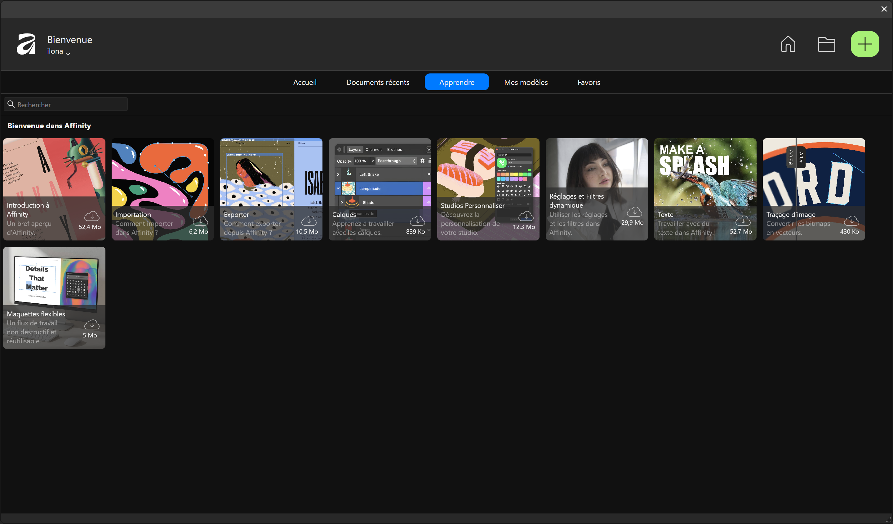
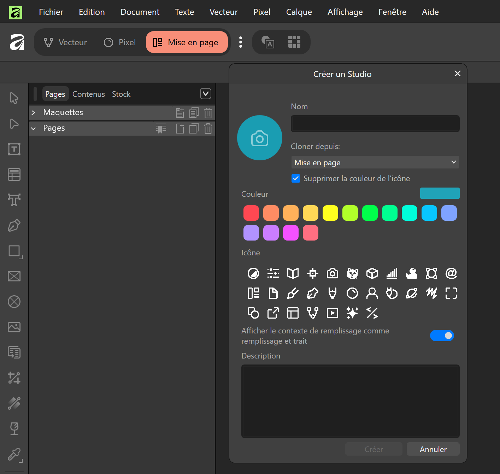
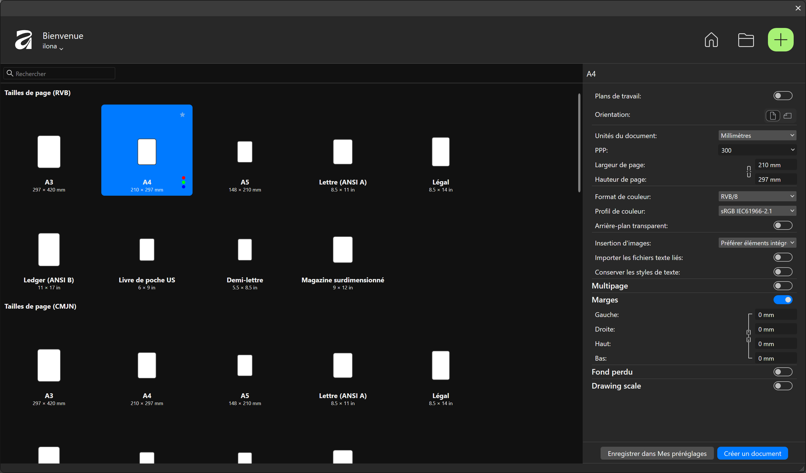
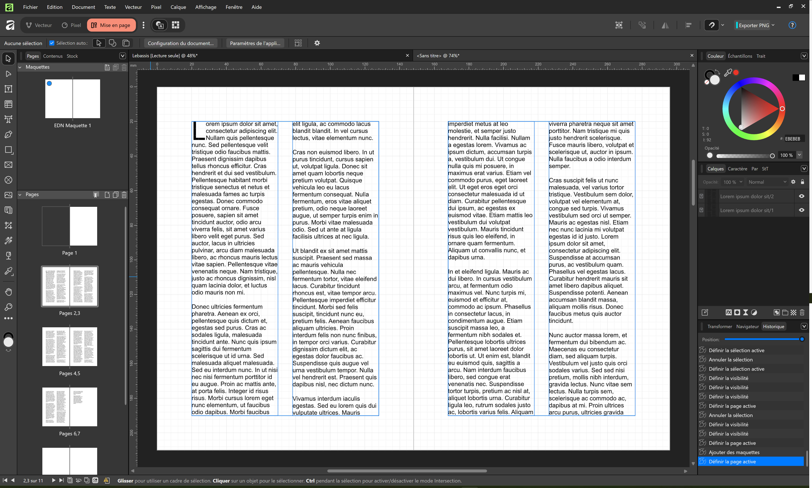
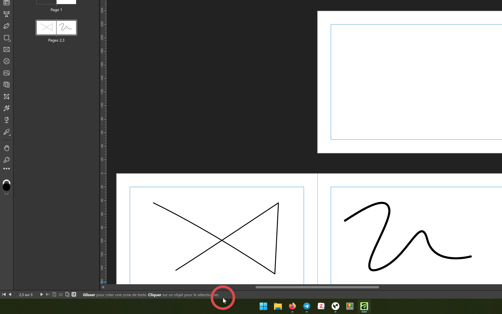
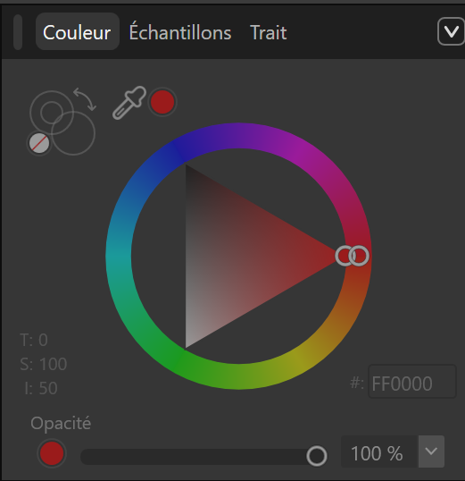
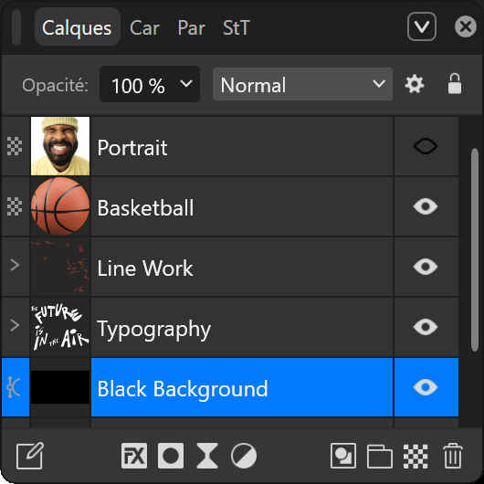
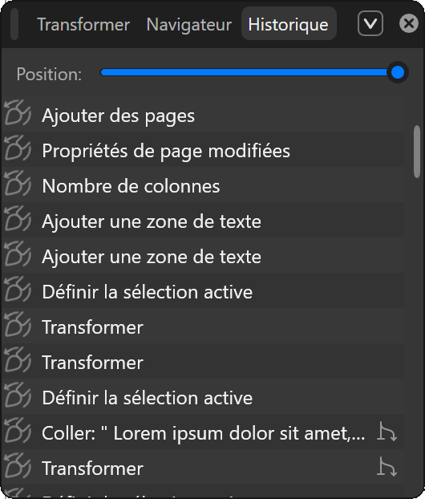
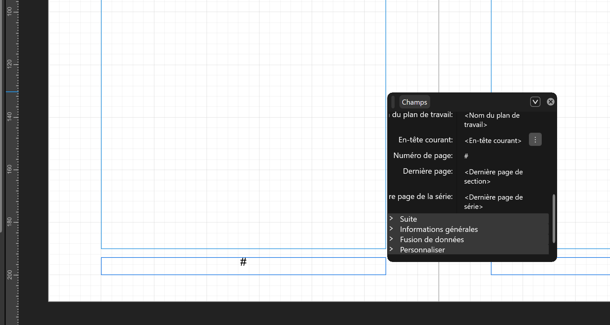
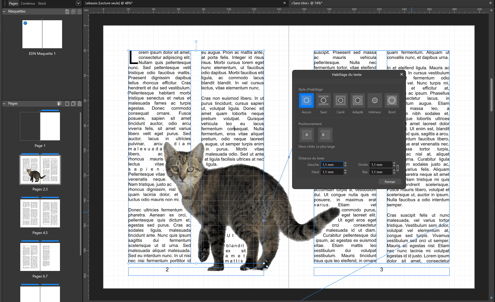
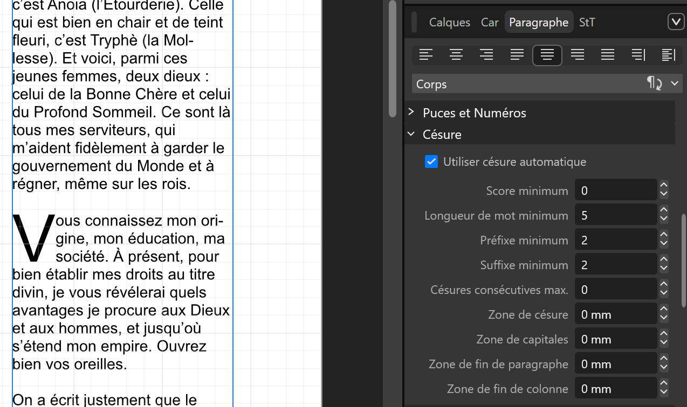
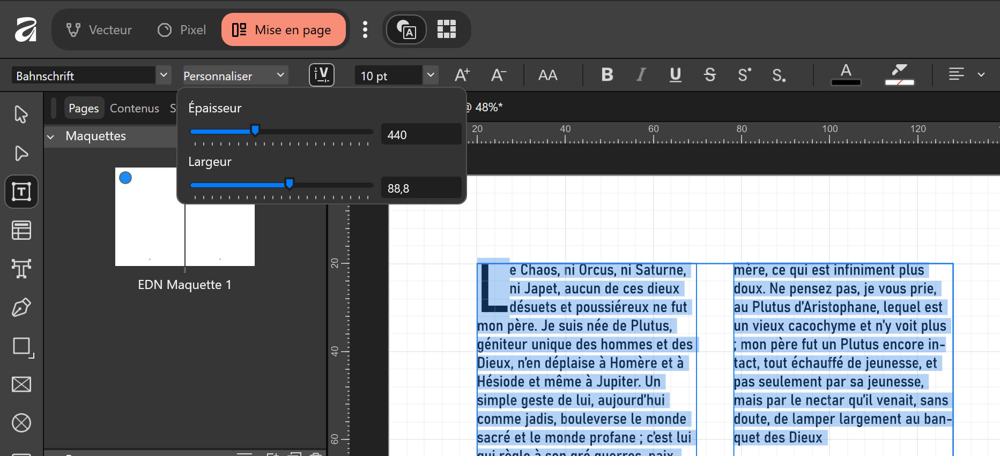
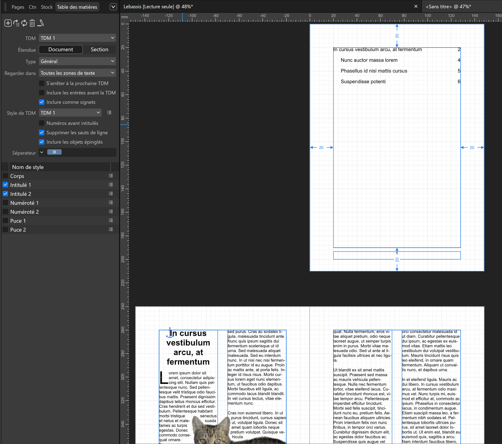
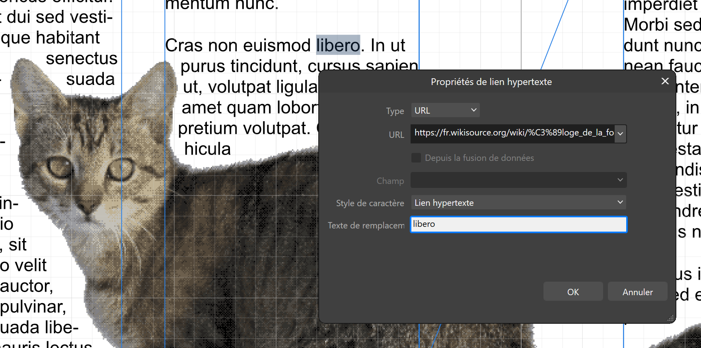
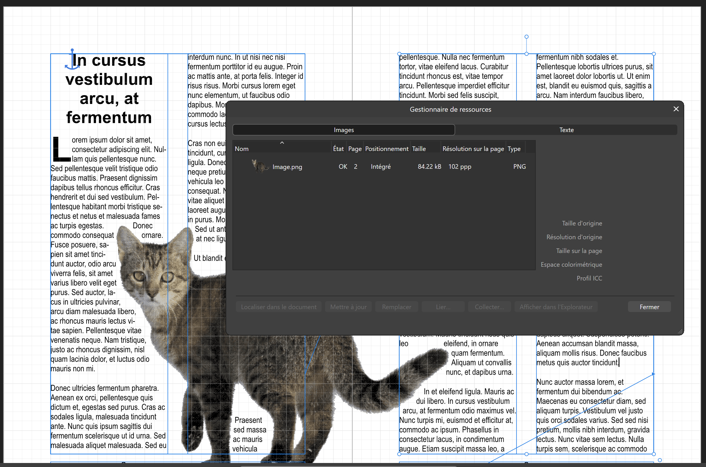
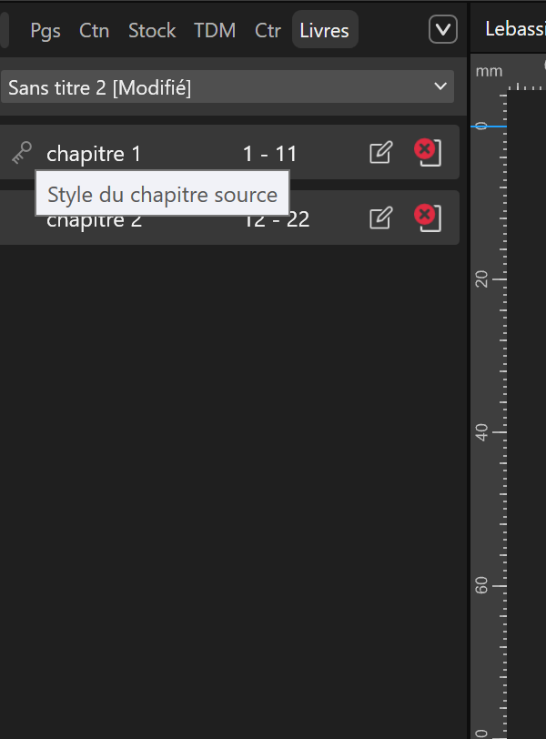
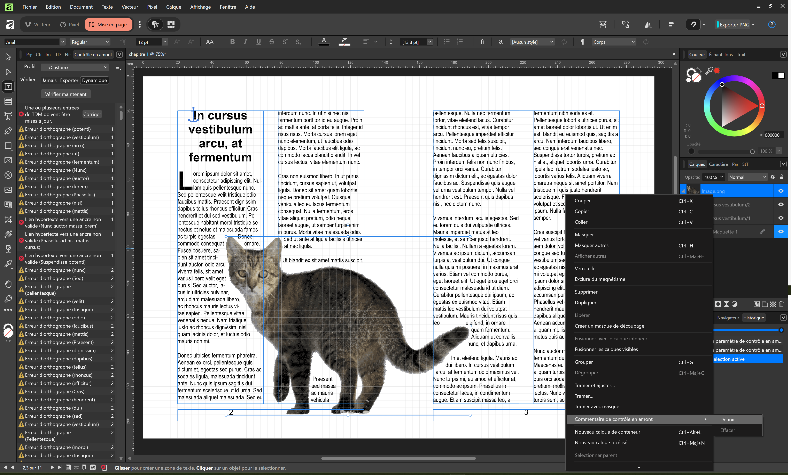
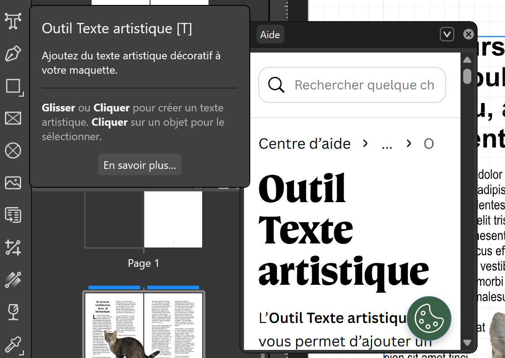
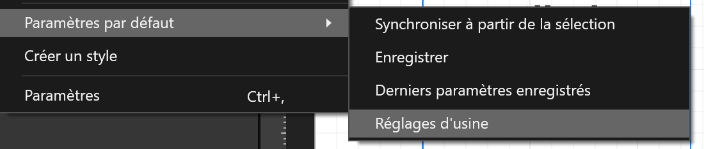
5. Références
- TonyB, « What programming Language is Affinity Designer written in? », Affinity Forum, 28 octobre 2016. https://forum.affinity.serif.com/index.php?/topic/27043-what-programming-language-is-affinity-designer-written-in/ [Consulté le 3 novembre 2026]
- « Senior UI Engineer - Objective-C/C++ (iOS/macOS) - Affinity @ Canva », Square Peg Job Board, 29 janvier 2026. https://squarepeg.getro.com/companies/canva/jobs/66328281-senior-ui-engineer-objective-c-c-ios-macos-affinity [Consulté le 3 novembre 2026]
- « Conditions d’éligibilité pour Canva Éducation », Canva. https://www.canva.com/fr_fr/education/condition-eligibilite/ [Consulté le 3 novembre 2026]
- « Abonnements et tarifs », Canva. https://www.canva.com/fr_ca/tarification/ [Consulté le 3 novembre 2026]
- « Canva pour l’enseignement supérieur », Canva. https://www.canva.com/fr_fr/enseignement-superieur/ [Consulté le 3 novembre 2026]
- « SERIF (EUROPE) LIMITED », Gov.uk, 25 juin 2026. https://find-and-update.company-information.service.gov.uk/company/02117968 [Consulté le 3 novembre 2026]
- « PagePlus », Wikipedia, 24 septembre 2026. https://en.wikipedia.org/w/index.php?title=PagePlus [Consulté le 3 novembre 2026]
- Affinity, « Post », LinkedIn, 2 octobre 2024. https://www.linkedin.com/posts/happy-birthday-to-us-affinity-designer-share-7247177427502649346-sUg-/ [Consulté le 3 novembre 2026]
- « Affinity Photo », Wikipedia, 21 octobre 2026. https://en.wikipedia.org/w/index.php?title=Affinity_Photo [Consulté le 3 novembre 2026]
- « Affinity Publisher », Wikipedia, 20 août 2026. https://en.wikipedia.org/w/index.php?title=Affinity_Publisher [Consulté le 3 novembre 2026]
- N. Bonyhady, « Canva’s billion-dollar bet on a 37-year-old Nottingham company », Australian Financial Review, 26 mars 2024. https://www.afr.com/technology/canva-s-billion-dollar-bet-on-a-37-year-old-nottingham-company-20240321-p5fea0 [Consulté le 3 novembre 2026]
- A. Hewson, « Introducing the all-new Affinity: Professional design, now free for everyone », Canva Newsroom, 29 octobre 2025. https://www.canva.com/newsroom/news/all-new-affinity/ [Consulté le 3 novembre 2026]
- « Notes de version de Septembre à Novembre 2026 », Centre d’aide Affinity. https://www.affinity.studio/fr_ca/help/release-notes/ [Consulté le 3 novembre 2026]
- « Configuration système requise pour Affinity », Centre d’aide Affinity. https://www.affinity.studio/fr_fr/help/introduction-system-requirements/ [Consulté le 3 novembre 2026]
- « App Affinity by Canva - App Store ». https://apps.apple.com/us/app/affinity-by-canva/id6751323445 [Consulté le 3 novembre 2026]
- « Affinity est-il disponible sur Linux, Android ou Chromebooks ? », Centre d’aide Affinity. https://www.affinity.studio/fr_fr/help/compatibility-with-linux-android-chromebooks/ [Consulté le 3 novembre 2026]
- Mattscreative, ryzendew/Linux-Affinity-Installer, 1 novembre 2026, Python. https://github.com/ryzendew/Linux-Affinity-Installer [Consulté le 3 novembre 2026]
- seapear, seapear/AffinityOnLinux, 22 août 2026, Python. https://github.com/seapear/AffinityOnLinux [Consulté le 3 novembre 2026]
- « Do I need to be online to authenticate Affinity? », Centre d’aide Affinity. https://www.affinity.studio/fr_fr/help/affinity-online-authenticate/ [Consulté le 3 novembre 2026]
- « Dois-je être en ligne pour utiliser les fonctionnalités IA dans Affinity ? », Centre d’aide Affinity. https://www.affinity.studio/fr_fr/help/canva-ai-online/ [Consulté le 3 novembre 2026]
- « Utilisez votre kit de marque dans Affinity », Centre d’aide Affinity. https://www.affinity.studio/fr_fr/help/use-brandkits-affinity/ [Consulté le 3 novembre 2026]
- « Exporter vers Canva », Centre d’aide Affinity. https://www.affinity.studio/fr_fr/help/sharing-export-to-canva/ [Consulté le 3 novembre 2026]
- « Modification du contenu Capture One dans Affinity », Centre d’aide Affinity. https://www.affinity.studio/fr_fr/help/addons-capture-one/ [Consulté le 3 novembre 2026]
- « Importer du contenu Affinity dans DaVinci Resolve », Centre d’aide Affinity. https://www.affinity.studio/fr_fr/help/extras-davinci-affinity/ [Consulté le 3 novembre 2026]
- « Formats de fichiers pris en charge », Centre d’aide Affinity. https://www.affinity.studio/fr_fr/help/appendix-fileformat/ [Consulté le 3 novembre 2026]
- « Importation de documents InDesign (IDML et INDD) », Centre d’aide Affinity. https://www.affinity.studio/fr_fr/help/get-started-import-in-design/ [Consulté le 3 novembre 2026]
- « À propos des pages et des planches », Centre d’aide Affinity. https://www.affinity.studio/fr_fr/help/pages-about-pages/ [Consulté le 3 novembre 2026]
- « Créer des scripts dans Affinity », Centre d’aide Affinity. https://www.affinity.studio/fr_fr/help/scripting-in-affinity/ [Consulté le 3 novembre 2026]
- « Lettrines », Centre d’aide Affinity. https://www.affinity.studio/fr_fr/help/text-dropcaps/ [Consulté le 3 novembre 2026]
- « Décorations », Centre d’aide Affinity. https://www.affinity.studio/fr_fr/help/text-decorations/ [Consulté le 3 novembre 2026]
- « Alignement visuel », Centre d’aide Affinity. https://www.affinity.studio/fr_fr/help/text-optical-alignment/ [Consulté le 3 novembre 2026]
- « Césure », Centre d’aide Affinity. https://www.affinity.studio/fr_fr/help/text-hyphenation/ [Consulté le 3 novembre 2026]
- « Interlettrage et crénage », Centre d’aide Affinity. https://www.affinity.studio/fr_fr/help/text-tracking-kerning/ [Consulté le 3 novembre 2026]
- « Polices variables », Centre d’aide Affinity. https://www.affinity.studio/fr_fr/help/text-variable-fonts/ [Consulté le 3 novembre 2026]
- « Statistiques de document », Centre d’aide Affinity. https://www.affinity.studio/fr_fr/help/text-document-stats/ [Consulté le 3 novembre 2026]
- « Gérer des dictionnaires orthographiques et de césure », Centre d’aide Affinity. https://www.affinity.studio/fr_fr/help/text-hyphenation-installing/ [Consulté le 3 novembre 2026]
- « À propos des notes », Centre d’aide Affinity. https://www.affinity.studio/fr_fr/help/advanced-about-notes/ [Consulté le 3 novembre 2026]
- « Importer du texte », Centre d’aide Affinity. https://www.affinity.studio/fr_fr/help/text-import-text/ [Consulté le 3 novembre 2026]
- « Intégrer ou lier », Centre d’aide Affinity. https://www.affinity.studio/fr_fr/help/media-embedding-vs-linking/ [Consulté le 3 novembre 2026]
- « Contrôle en amont », Centre d’aide Affinity. https://www.affinity.studio/fr_fr/help/sharing-preflight/ [Consulté le 3 novembre 2026]
- « Installer Affinity sur votre appareil », Centre d’aide Affinity. https://www.affinity.studio/fr_fr/help/install-affinity/ [Consulté le 3 novembre 2026]
- Canva, « Affinity Download », winstall. https://winstall.app/apps/Canva.Affinity [Consulté le 3 novembre 2026]
- « L’accessibilité chez Canva », Canva. https://www.canva.com/fr_fr/accessibility/ [Consulté le 3 novembre 2026]
- C. Gratzer, « Can Affinity Create Accessible PDFs? The Truth About Accessible PDFs in Affinity », 15 avril 2026. https://www.youtube.com/watch?v=ScKx6WLOs3g [Consulté le 3 novembre 2026]
- « Canva Is Worth $42 Billion. When Does It IPO? », NonPublic, 13 octobre 2026. https://www.nonpublic.com/resources/canva-is-worth-usd42-billion-when-does-it-ipo [Consulté le 3 novembre 2026]
- « Canva IPO: What UK investors should know », CMC Markets. https://www.cmcmarkets.com/en-gb/ipo-trading/canva-ipo [Consulté le 3 novembre 2026]
- dangus, « Affinity Studio now free », Hacker News, 31 octobre 2025. https://news.ycombinator.com/item?id=45761445 [Consulté le 3 novembre 2026]